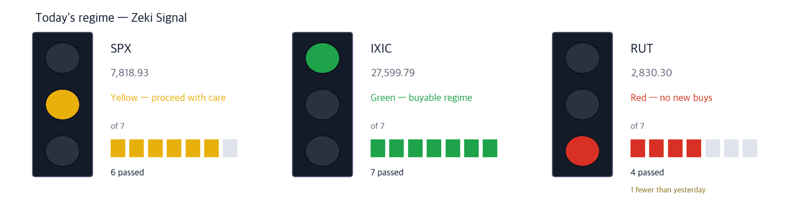

Dow 51,521 +0.49% | Nasdaq Comp. 27,600 +0.45% | S&P 500 7,819 +0.58% | Russell 2000 2,830 -0.59% | 10-yr Treasury 5.27% | Zeki Signal Yellow |

Green favours buying, yellow says wait, red says hold off. The cells count how many of seven conditions are met - more cells mean the advance is broader. This signal uses the October 6 close. The Nasdaq Composite meets all seven conditions and is green. The S&P 500 meets six and is yellow. The Russell 2000 meets four, one fewer than on October 5, and is now red. The three indexes combined read yellow.
Wait — the stance the signal implies.
On October 6 the S&P 500 rose 0.58% to 7,818.93, a record close. The Nasdaq Composite gained 0.45% to another record, and the Dow rose 0.49%. (IBD)
AI-related stocks did the lifting. Most stocks fell, and the small-cap Russell 2000 slipped 0.59%. The advance is concentrated in a few groups. (The Wall Street Journal, IBD)
Google and Constellation Energy signed a 20-year nuclear power deal. Rather than build new reactors, it raises output at 11 existing ones. Constellation shares jumped 12.25% on the day. (The Wall Street Journal, IBD)
The biotech ETF (XBI) went the other way, down 3.39%. Many biotech and diagnostics names reversed lower after rising early. (IBD)
① After the 2pm ET Fed minutes, watch the 10-year yield. It eased to 5.27% on October 6, a day after touching a 24-year high. If the minutes point to one more hike, yields rise again and tech names near their highs wobble first. (IBD, The Wall Street Journal)
② Grid builder Quanta Services rose 5.29%. Money moved into power equipment on the nuclear deal. It reclaimed its 50-day average and then cleared its trendline. (IBD)
③ Astera Labs rose 7.58% and carries the heaviest evidence. It makes the parts that link chips inside a server. After a big one-day jump, the first test is whether it holds its October 6 close after the open. (IBD)
One number - the U.S. trade deficit of about $106 billion in August, the widest in more than a year. The country bought more crude oil, gold and semiconductors from abroad. (The Wall Street Journal)
| Date | What to watch | What it changes |
|---|---|---|
| Wed Oct. 7, 2pm ET | FOMC minutes (Sept. 15-16 meeting) | Shows whether members leaned toward raising rates further; Treasury yields move first |
| Fri Oct. 9, pre-open | Delta Air Lines third-quarter results | The first big report of earnings season. Shows how much of the fuel bill reached fares |
| Wed Oct. 14, 8:30 ET | U.S. consumer prices (September) | A hot reading tends to lift the 10-year yield, and growth stocks wobble first |
The Google-Constellation agreement is the largest deal between a nuclear operator and a tech company to squeeze more output from existing reactors. It locks in power for data centers ahead of time. (The Wall Street Journal)
Power producers and power equipment rose together on the news. Buy signals flashed in AI power names such as Quanta Services and Bloom Energy. (IBD)
| Close | Day | Week | 20 sessions |
|---|---|---|---|
| $719.56 | +5.29% | +10.40% | +12.60% |
| 3 months | Zeki Strength | Zeki Flow | From high |
|---|---|---|---|
| +7.99% | 84 | A | -8.8% |
| Who | Quanta Services, which builds transmission lines and substations. |
| What | It rose 5.29% on Oct. 6 to $719.56, up 10.40% over the week. |
| When | As of the Oct. 6 close. |
| Where | Listed on the New York Stock Exchange. |
| Why | Data centers that draw more power need more transmission lines and substations first. |
| How | It reclaimed its 50-day average a few sessions ago, then cleared its trendline. Volume was 1.08 times the 50-day average. |
Verdict - Three of four met. But Zeki Strength is 84, short of the 90 bar. Zeki Flow is A over both 3 months and 2 weeks.
Confirmation - A close above the Oct. 6 high of $722.21.
Would be wrong if - A close back below the 50-day average of $646.18.
| Close | Day | Week | 20 sessions |
|---|---|---|---|
| $295.78 | +3.19% | +1.56% | +6.70% |
| 3 months | Zeki Strength | Zeki Flow | From high |
|---|---|---|---|
| +16.32% | 96 | C | -15.8% |
| Who | Bloom Energy, which makes fuel cells that generate power on site. |
| What | It rose 3.19% on Oct. 6 to $295.78, 15.8% below its one-year high. |
| When | As of the Oct. 6 close. |
| Where | Listed on the New York Stock Exchange. |
| Why | It can power a data center on site without waiting for grid upgrades. |
| How | It rose within 5% above its entry line. Volume was light at 0.76 times the 50-day average. |
Verdict - Three of four met. Zeki Strength 96, up 6.7% over 20 sessions. But 3-month Zeki Flow is C, short of the A-or-B bar. The 2-week grade improved to B.
Confirmation - A close above the six-session high of $302.35.
Would be wrong if - A close below the 21-day exponential average of $271.19.
| Close | Day | Week | 20 sessions |
|---|---|---|---|
| $384.09 | +1.86% | +5.21% | +6.64% |
| 3 months | Zeki Strength | Zeki Flow | From high |
|---|---|---|---|
| +21.49% | 87 | A | -1.2% |
| Who | Wesco International, which distributes electrical and communications gear to job sites. |
| What | It rose 1.86% on Oct. 6 to $384.09. It crossed its $385.37 entry line during the session but closed below it. |
| When | As of the Oct. 6 close. |
| Where | Listed on the New York Stock Exchange. |
| Why | As data-center and grid projects grow, orders for cable and switchgear run through it. |
| How | Volume was 0.97 times the 50-day average, just under it. Earnings are expected to grow 30% this year. |
Verdict - Two of four met. Zeki Strength is 87, short of the bar, and 2-week Zeki Flow slipped to B from A over 3 months.
Confirmation - A close above $385.37 on volume above the 50-day average.
Would be wrong if - A close below the 21-day exponential average of $362.01.
Nvidia-backed cloud company Lambda is raising up to $4 billion in a final round before its planned IPO. SoftBank-backed DayOne Data Centers plans to raise up to $5 billion in a Nasdaq listing by year-end. Money for data centers has not slowed. (The Wall Street Journal)
Within AI, the money went to the gear that links chips and servers inside data centers. Arista Networks set an intraday record, and Amphenol cleared its entry line. (IBD)
| Close | Day | Week | 20 sessions |
|---|---|---|---|
| $389.80 | +7.58% | +8.93% | +34.95% |
| 3 months | Zeki Strength | Zeki Flow | From high |
|---|---|---|---|
| -0.85% | 95 | B | -22.0% |
| Who | Astera Labs, which makes chips that let processors exchange data inside a server. |
| What | It rose 7.58% on Oct. 6 to $389.80, up 34.95% over 20 sessions. |
| When | As of the Oct. 6 close. |
| Where | Listed on Nasdaq. |
| Why | The more graphics chips a server holds, the more parts are needed to link them. |
| How | It opened above the prior high and rose past an early entry line. Volume was 1.57 times the 50-day average. It sits 22.0% below its one-year high. |
Verdict - All four met. Zeki Strength 95; Zeki Flow is B over 3 months and A over 2 weeks. But it comes after a big one-day jump.
Confirmation - A close above the six-session high of $401.74.
Would be wrong if - A close below $358.62, 8% under the Oct. 6 close.
| Close | Day | Week | 20 sessions |
|---|---|---|---|
| $215.36 | +4.09% | +6.16% | +10.46% |
| 3 months | Zeki Strength | Zeki Flow | From high |
|---|---|---|---|
| +18.95% | 87 | A | -0.3% |
| Who | Arista Networks, which makes high-speed network switches for data centers. |
| What | It rose 4.09% on Oct. 6 to $215.36, clearing its entry line. |
| When | As of the Oct. 6 close. |
| Where | Listed on the New York Stock Exchange. |
| Why | Tying thousands of AI servers together takes fast switches. |
| How | It hit an intraday record of $216.07. Volume was 1.14 times the 50-day average. |
Verdict - Three of four met. But Zeki Strength is 87, short of the 90 bar. Zeki Flow is A over both 3 months and 2 weeks.
Confirmation - A close above the record of $216.07.
Would be wrong if - A close below the 21-day exponential average of $202.47.
| Close | Day | Week | 20 sessions |
|---|---|---|---|
| $88.62 | +1.55% | +5.07% | +8.39% |
| 3 months | Zeki Strength | Zeki Flow | From high |
|---|---|---|---|
| +12.02% | 79 | B | -1.5% |
| Who | Amphenol, which makes cables and connectors used in data centers. |
| What | It rose 1.55% on Oct. 6 to $88.62, above its $88.17 entry line. |
| When | As of the Oct. 6 close. |
| Where | Listed on the New York Stock Exchange. |
| Why | More servers and switches mean more cables and connectors between them. |
| How | Earnings are expected to grow 60% this year. Volume was light at 0.74 times the 50-day average. |
Verdict - Three of four met. But Zeki Strength is 79, short of the bar. Zeki Flow is B over 3 months and A over 2 weeks.
Confirmation - A close above the one-year high of $89.93.
Would be wrong if - A close back below the $88.17 entry line.
On October 6 Moderna lost 7.75%, Tempus AI 13.85% and Guardant Health 8.83%. (IBD) Guardant Health appeared in the October 6 digest. The biotech ETF dropped below its 21-day and 50-day averages. IBD read it as a warning against crowding into one group. We pick no names from it today.
One more set aside for the same reason - Constellation Energy. It jumped 12.25% on the Google deal, but its trend gauge (the gap between the 25- and 50-day averages) is still below zero. Its Zeki Strength is 53, and it sits 27.2% below its one-year high. It is the story of the day, but not a name for us.
| Name | ①up over 20 sessions | ②Strength 90+ | ③flow 3mo A or B | ④2wk not weaker | Met | Weight of evidence |
|---|---|---|---|---|---|---|
| PWR | O | X | O | O | 3/4 | Needs checking |
| BE | O | O | X | O | 3/4 | Grounded |
| WCC | O | X | O | X | 2/4 | Needs checking |
| ALAB | O | O | O | O | 4/4 | Well grounded |
| ANET | O | X | O | O | 3/4 | Needs checking |
| APH | O | X | O | O | 3/4 | Needs checking |
The four columns ask: ① up over 20 sessions? ② Zeki Strength 90 or higher? ③ 3-month Zeki Flow A or B? ④ not weaker over the last 2 weeks? The count of O's sets the weight of evidence. Of today's 6 names, 2 met ② and 5 met ③.
The U.S. has no daily filing of how many shares foreigners or institutions bought. The grades below estimate buying pressure from price and volume; they are not a tally. Data run to the October 6 close.
| Name | Flow 3mo→2wk | Volume | How to read it |
|---|---|---|---|
| Accumulation 5 - A over 3 months, still buying over 2 weeks | |||
| Mattel Inc MAT | A → A = | 4.64x | Watch✗ — Buying over both 3 months and 2 weeks |
| Lamb Weston Holdings LW | A → A = | 2.86x | Watch✗ — Buying over both 3 months and 2 weeks |
| Vistra Corp VST | A → A = | 2.43x | Watch✗ — Buying over both 3 months and 2 weeks |
| Accenture plc ACN | A → B ↓ | 2.20x | Caution — The grade is falling while volume rises |
| Eton Pharmaceuticals ETON | A → B ↓ | 1.66x | Caution — The grade is falling while volume rises |
| Distribution 5 - E over 3 months, still selling over 2 weeks | |||
| Fair Isaac FICO | E → D ↑ | 3.87x | Caution — Selling over both 3 months and 2 weeks, on rising volume |
| Nike Inc NKE | E → E = | 2.94x | Caution — Selling over both 3 months and 2 weeks, on rising volume |
| Annaly Capital Management NLY | E → E = | 2.26x | Caution — Selling over both 3 months and 2 weeks, on rising volume |
| C.H. Robinson Worldwide CHRW | E → E = | 1.91x | Caution — Selling over both 3 months and 2 weeks, on rising volume |
| Weyerhaeuser Company WY | E → E = | 1.84x | Caution — Selling over both 3 months and 2 weeks, on rising volume |
Volume is the last five sessions' average divided by the 50-day average. Rows are sorted by volume; names shown in the October 6 digest are left out and the next ones fill in. ✓ means the name also passes our entry rule (trend gauge above zero); ✗ means the flow is good but the name is outside the rule. We are still counting whether this reading works.
A flow grade is not a signal to buy the next day. Measured over 21 years of U.S. data, later returns by grade could not be told apart. This table shows only what is happening now.
Even when the story and the price agree, we check the money separately. The table answers whether five-session volume beat the 50-day average.
| Name | Above the 50-day average? | Zeki Flow 3mo → 2wk | How to read it |
|---|---|---|---|
| Quanta Services (PWR) | 0.92x ✗ below | A → A | Watch — Buying over both 3 months and 2 weeks |
| Bloom Energy (BE) | 0.73x ✗ below | C → B | Check — Higher, but on thin volume |
| Wesco International (WCC) | 0.91x ✗ below | A → B | Wait — Falling, but volume has dried up |
| Astera Labs (ALAB) | 1.03x ✓ above | B → A | Check — Higher, but on thin volume |
| Arista Networks (ANET) | 0.77x ✗ below | A → A | Wait — Holding, but volume has dried up |
| Amphenol (APH) | 0.91x ✗ below | B → A | Check — Higher, but on thin volume |
The words do not describe our own trades. Watch means price and volume point the same way. Check means the grade improved on thin volume; Wait means the trend holds but volume has dried up.
| Weight of evidence | Names | Beat S&P 500 | Winners led by | Losers trailed by | All averaged |
|---|---|---|---|---|---|
| Well grounded | 40 | 26 / 40 | +4.46%p | -3.80%p | +1.57%p |
| Grounded | 17 | 8 / 17 | +2.99%p | -3.67%p | -0.54%p |
| Needs checking | 19 | 7 / 19 | +3.56%p | -2.87%p | -0.50%p |
| No basis | 4 | 0 / 4 | none | -2.42%p | -2.42%p |
| Excluded | 7 | 0 / 7 | none | -3.51%p | -3.51%p |
| Well grounded 40 | +1.57%p | ||||||
| Grounded 17 | −0.54%p | ||||||
| Needs checking 19 | −0.50%p | ||||||
| No basis 4 | −2.42%p | ||||||
| Excluded 7 | −3.51%p |
The centre line is S&P 500. Right is ahead, left is behind. The grey number is how many names are in that band.
Of 40 Well grounded names, 26 beat S&P 500. Those 26 led by 4.5%p on average; the 14 that lost trailed by 3.8%p. All together: +1.6%p.
After 20 sessions (about a month): results first arrive on Oct 7; they are added here as a table as they fill.
After 60 sessions (about three months): results first arrive on Dec 3; they are added here as a table as they fill.
Verdict. Once both markets together reach 60 cases for a window, we run the test fixed in advance and print what it says. 5 sessions, 158 cases — Not shown to beat the index. But higher-grade names did better. (47.5% beat the index) · 20 sessions: 0 of 60 · 60 sessions: 0 of 60
| When | What to watch | What it means |
|---|---|---|
| First 30 minutes (9:30-10:00 ET) | Is Astera Labs trading above its Oct. 6 close of $389.80? | Above it, the jump is carrying on. Below it, part of the gain is coming back out |
| After the 2pm Fed minutes | Does the 10-year yield climb above 5.3%? | If so, networking names near their highs fall first |
| Last 30 minutes (3:30-4:00 p.m. ET) | Does the Russell 2000 close above its Oct. 6 close of 2,830? | A close above 2,830 means small caps are joining and the advance is broadening. Below it, AI alone is still carrying the market |
Oil is flowing through the Strait of Hormuz again, but damaged refineries leave diesel short and fuel prices high. (The Wall Street Journal) West Texas Intermediate was nearly flat on October 6 at $89.44 a barrel. (IBD) France's debt has made it one of Europe's weakest links. Its finance minister said the government is ready to push spending cuts through without a parliamentary vote if budget talks stall. (The Wall Street Journal) On Friday, Delta's results and the University of Michigan consumer sentiment index both arrive. (IBD)
This is the Rex Way, ZekiRex™